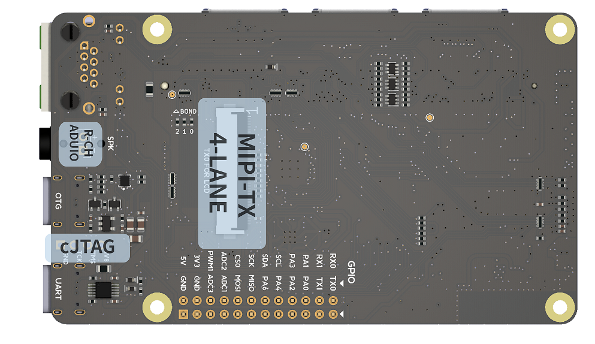
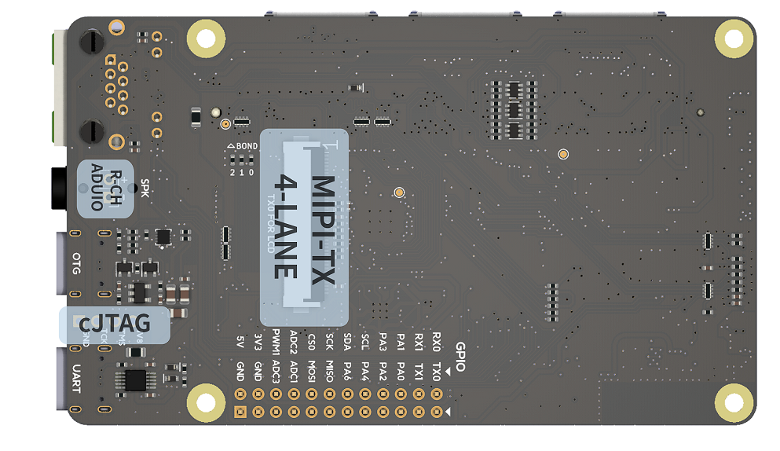

中文
中文MAIX-III AXera-Pi 是什么？
如果你想分享这款 AI 开发板给其他同学了解，请使用唯一的传送门「 wiki.sipeed.com/m3axpi 」。

2021 年的时候，国内各大芯片原厂纷纷亮出了自己的 Linux 边缘 AI 芯片。
但在 AI 开发板的市场中，前有树莓派（Raspberry Pi），后有英伟达（Jetson Nano）等国外老牌选手强力围剿国内 Linux AI 开发板，在这之前国产的同类产品无论是价格还是体验，都被打的丢盔弃甲。
如今在千元内的选手有晶晨 A311D 、地平线 X3 、瑞芯微 RV1126、堪智 K510、全志 V85X 、晶视 CR182x 等等国产芯片，看上去感觉有很多选择？
但是，它们要么资料太少（资料封闭）、能效比低、价格太贵、生态贫瘠、开发困难、视觉效果太差存在各种各样的问题。
真的很难有一款边缘 AI 板子可以满足开发者的要求！！！
但现在！这些问题可能不再是问题了！
是时候请出我们新一轮的参赛选手了！
练习时长两年半（不是），一颗 3.6TOPs@INT8 大算力低功耗超强夜景的芯片总算是来到了 MAIX-III Linux AI 系列！

没错，它就是来自「爱芯元智」的 AX620A，这是一款高算力，高能效比，低功耗的 AI SoC 芯片，芯片集成了四核 Cortex A7 @ 1Ghz CPU，带有浮点运算单元，支持 NEON，拥有 3.6TOPs@INT8 的高算力 NPU，支持 4K@30fps 的 ISP，以及支持 H.264、H.265 编码的 VPU，AX620A 还支持 32bit LPDDR4x，支持 EMMC v5.1 / SPI Flash，最多支持 6 路 MIPI 输入，同时最多支持 4 路工作，支持多路子码流，支持 1 路千兆 Ethernet，支持 1 路 USB2.0，支持 2 路 MIPI DSI/CSI 输出。拥有大算力和优异画质处理能力的 AX620A 可以实现更多的 AI 功能，带来最优的 AI 体验！（来自官方）
产品介绍
它其实早在九月初就参展了 2022 年世界人工智能大会了～（当时它长这样）

最后总算是在 20221001 的时候推出了这款搭载 AX620A 的开发板，正式名为：MAIX-III AXera-Pi，在以下内容中简称 m3axpi 喔！
那么，它都带来了哪些内容呢？
- 资料太少？文档教你从开箱到开发，从嵌入式 Linux 开发到 AI 模型开发指南一应俱全！
- 能效比差？四核 A7 靠一条 USB3.0 就可以带起来！和你的外接电源、散热器说拜拜吧！！
- 开发困难？支持 debian11 系统内置 SDK 直接板上编译！白嫖在线 AI 模型训练直到部署！！！
- 没有生态？ SIPEED 拥有关于 LINUX、RISCV、AIOT、FPGA、MCU 等嵌入式领域的内容！！！！
- 摄像效果太差？芯片主打 AI ISP 夜视增强！由原厂亲手为你调试白天到夜间的超强影像！！！！！
- 价格太贵？从核心+底板+屏幕+摄像头+卡+外壳支架全套总共人民币 579 ！（咆哮！！！！！！）
说这么多没用的，还是赶紧把东西掏出来，让大家瞧瞧都有些什么吧！
微光影像效果
夜景增强效果
展会暗室现场
AI 应用实拍
多元 AI 生态
大算力超多算子！
点此 >>> 「查看 AX620A 算子支持列表」 <<< 喔！
下表统计一下目前（20221012）千元内在售的 AI 主板（仅单主板，全套太贵）的 NPU 算力性能从高到低的排行（商品价格会受市场波动影响，若发现表格数据过于离谱请指正）。
| 芯片 | 产品 | 价格 | CPU | RAM | NPU |
|---|---|---|---|---|---|
| 晶晨 A311D | Khadas VIM3 | ¥850.00 | 四核 ARM Cortex-A73@2.2GHz 双核 ARM Cortex-A53@1.8GHz |
2GB | 5TOPs |
| 地平线 X3 | 旭日派 | ¥499.00 | 四核 ARM Cortex-A53@1.2GHz | 2GB | 5TOPs |
| 爱芯元智 AX620A | MAIX-III AXera-Pi | ¥399.00 | 四核 ARM Cortex-A7@1.0GHz | 2GB | 3.6TOPs |
| 堪智 K510 | K510 CRB-KIT Lite | ¥699.00 | 双核 RISCV 64 位 800Mhz | 512MB | 3TOPs |
| 瑞芯微 RV1126 | EASY EAI Nano | ¥328.00 | 四核 ARM Cortex-A7@1.5GHz | 1GB | 2TOPs |
| 全志 V85X | 全志 V853 单主板 | ¥973.00 | 单核 ARM Cortex-A7@1.2GHz | 512MB | 1TOPs |
大量现成的模型！
没有拿到板子之前，你可以到 MaixHub 模型库 找到你需要的模型，可以在过滤选项中选择 AX-Pi 来查找能在 AXera-Pi 上运行的模型。
还可以在 AXERA-TECH/ax-samples 仓库也可以找到模型，板子系统里也预置了模型资源，后续模型更新会在这里「ax-models」，而 AX-Samples 将不断更新最流行的、实用的、有趣的示例代码，目前比较典型的模型支持：
- 物体分类: MobileNet, Resnet
- 物体检测: YOLO v3~v8
- 分割: Face_Parsing, PP-HumanSeg
- 3D单目车辆检测： Monodlex
- 人体关键点：HRNet，AX-POSE-PPL， HandPose
- 语义分割: PP-Seg
- 传统 CV 操作: CropResize 加速
在线训练模型吧！
支持 零代码，免费云端服务器的 MaixHub在线训练，小白也能定制自己的 AI 模型！
移植自己的模型
想要在板子上移植你的模型请看「部署模型到 Maix-III AXera-Pi 开发板」
分享有趣的模型！
- 社区可以找到大家分享的模型，方便快速验证想法。
- 在线训练的模型，或者移植的自己的模型，均可以分享到 MaixHub 模型库 ，大家一起交流学习成长！（请开始你的表演吧）
活跃的社区资源
产品相关的专栏内容有（官方维护）：
- MAIX-III AXera-Pi 系列文章（1）：新一代 3.6T 视觉 AI 板卡面世
- MAIX-III AXera-Pi 系列文章（2）：丰富多采的 AI 应用
- MAIX-III AXera-Pi 系列文章（3）：Debian 系统 & 开箱案例
- MAIX-III AXera-Pi 系列文章：开箱之硬件初体验
- MAIX-III AXera-Pi 系列文章：上手之丝滑玩转 AI 板卡【一】
- MAIX-III AXera-Pi 系列文章：上手之丝滑玩转 AI 板卡【二】
- YOLOv8 目标检测：训练自定义数据集并部署到爱芯派（一）
- YOLOv8 目标检测：训练自定义数据集并部署到爱芯派（二）
- MMPose：在爱芯派上玩转你的关键点检测
- MOT：如何在爱芯派上实现多目标跟踪的神奇效果！
- MMPoes（衍生章）：如何在爱芯派上实现跌倒检测并预警
- OCR：如何利用爱芯派实现图像文字识别
以下是由社区开发者贡献的内容，欢迎你也来贡献喔！！！（直接丢群里都可以喔！）
- 爱芯派-AI微光全彩夜视-开箱体验
- 爱芯 AX620A NPU 初体验
- MMYOLO 检测算法部署在 AX620A 记录
- 部署你的yolov8来识别杠精（bushi）
- [m3axpi] YOLOv5 训练到部署全流程（最新）
- [m3axpi] YOLOv8 训练到部署全流程（最新）
- 爱芯元智AX620A部署yolov5 6.0模型实录（已过时）
- ubuntu22.04搭建AX620A官方例程开发环境
- AX620A运行yolov5s自训练模型全过程记录（windows）
- MAIX-III AXera-Pi爱芯派从零入门开发【1】开箱试玩
- MAIX-III AXera-Pi爱芯派从零入门开发【2】开发部署
- MAIX-III AXera-Pi爱芯派从零入门开发【3】模型转换及部署
- MAIX-III AXera-Pi爱芯派从零入门开发【4】视频推理及推流
- 小手智联老徐 —— AI 边缘计算平台 - 爱芯元智 AX620A 爱芯派开箱
- HonestQiao —— 矽速 MAIX-III AXera-Pi 开箱
- 一款国产「3.6TOPS@INT8」视觉 AI 开发板
- 国产AI开发板测评 | MAIX-III AXera-Pi 上手 YOLOv5s 实时目标检测
- 【AXPI】如何在 M1/M2 Mac上使用 Rndis
产品相关的新闻内容有：
- AI ISP 的黎明——大话成像
- 2022世界人工智能大会启动:爱芯元智发布AI-ISP“爱芯智眸®”_中华网
- 爱芯元智AX620A与百度飞桨完成 I 级兼容性测试 开源生态建设更进一步
- AI 视觉新势力×微光全彩“黑”科技
- 爱芯派™AXera-Pi™亮相ICCAD 爱芯元智开源生态建设加速
- 新一代 Kaldi - 嵌入式端实时语音识别
截止更新时间：20221205
硬件参数


硬件标注图
 

核心板参数
| 项目 | 参数 |
|---|---|
| CPU | 四核 Cortex-A7, 支持 NEON 和 FPU |
| NPU | 14.4Tops@int4，3.6Tops@int8 |
| ISP | 4K@30fps |
| 编解码格式 | H.264, H.265 |
| 视频编码 | 4K@30fps |
| 视频解码 | 1080P@60fps |
| Ethernet | 支持双路RGMII / RMII 接口模式的以太网 |
| 显示输出 | MIPI DSI 4 Lane，最高支持4K@30FPS |
| DRAM | 2GB LPDDR4X 3733Mhz |
| 存储 | 可选16GB EMMC（默认是 TF 卡启动） |
| IO 引出 | DDR4 SODIMM 260P 金手指全 IO 引出 |
底板参数
| 项目 | 参数 |
|---|---|
| 摄像头输入 | （默认单摄）最高支持 3 摄:1个MIPI4-LANE+2个MIPI2-LANE |
| 屏幕输出 | 支持最高 4-LANE MIPI DSI 屏幕 |
| SD 插槽 | 默认从 SD 卡启动 |
| 录音输入 | 板载两个 MEMS MIC 支持双麦降噪 |
| 音频输出 | 3.5MM耳机接口 支持立体声输入和 MIC 输入 |
| 网络接口 | 支持 千兆以太网（ETH） 和 2.4GHZ WI-FI 板载天线 |
| USB 接口 | 1xUSB2.0HS 支持 OTG 或 HOST 功能，1xUSB-UART 系统串口 |
| 其他资源 | 1x用户按键，3x系统按键，1xRTC时钟，2xLED |
| 对外接口 | 引出CJTAG，可自行连接相应调试器，引出2x12排针，4个M2.5螺丝定位孔 |
摄像头一览
- 低配 gc4653 400w 基础体验版本。

- 高配 os04a10 400w 夜景增强版本。

硬件资源
软件开发
超高性价比与能效比
别搞那些虚的。来点实际点的，以下是目前（20221014）市场上销量排行的典型 AI 开发产品，商品价格会随时变动，有疑问可查询或指出并纠正。（已除去低成本 38 板摄像头和芯片原厂超昂贵开发板）
| AI 开发板 | 全家桶套餐的主要内容 | 大致价格（20221013） |
|---|---|---|
| 英伟达JETSON NANO开发板 | 4GB 主板、铝合金外壳（带风扇）、5V4A 电源、双频无线网卡、64G U盘、IMX279 摄像头、HDMI 线 + 网线、7 寸触摸屏+支架、 | ¥2129.00 |
| Raspberry Pi 树莓派4B | 4GB 主板、七寸触摸屏+支架、64G U盘、散热片、HDMI 线 + 网线、5V3A 电源、亚克力外壳（带风扇）、500w USB 摄像头、入门指导手册 | ¥1439.00 |
| Khadas vim3物联网a311d（目前线上销量不高，但很典型） | VIM3（4GB+32G）开发板、外壳、散热器、风扇、30W 电源、HDMI 线 | ¥1399.00 |
| 迅为RK3568开发板瑞芯微 | 商业级2G+16G、7寸MIPI屏、OV5695摄像头、（没有配电源） | ¥1380.00 |
| EASY EAI Nano AI开发板 瑞芯微RV1126 | 1GB 单主板、200w双目摄像头（gc2xxx）、5寸ips屏、天线、喇叭、铜柱、2A电源 | ¥799.00 |
| 亚博智能 旭日X3派开发板 | 2GB 主板、古月居课程、WIFI 天线、铝合金外壳、gc4663 摄像头、32G U盘、5V3A 开关电源、HDMI 线 | ¥769.00 |
| Sipeed M3AXPI Linux AI 微光夜视 爱芯派 | 2GB 单主板、400w gc4653 摄像头、5寸ips屏、外壳、数据线、32G TF 卡、在线模型训练服务、活力四射的开源社区 | ¥579.00 |
想想某些产品为什么卖这么贵，销量还这么好？凭什么？
这些产品除了本身的质量要过硬，功能要够强，还要凭借自身的社区生态、软件支持、丰富资料、开源代码、用户口碑等等特色，来支撑产品高性价比的形象。
笔者在这里认为所谓的性价比不是一昧地追求产品的最低价，而是在同类产品市场的主流价格区间内，选出社区用户群体可以接受的价格，然后在这个定位里去尽力做出效果最好的产品。
从这些典型的产品中可以看出 m3axpi 套餐是没有配「散热片和风扇还有外接电源」的，这也是它的另一个特色「高能效比」。
是的，这个产品不需要散热器/风扇，也不需要外接 2A 电源就可以启动系统，更不需要找 hdmi 线和显示器。
来一个实际测量的温度和功耗，注意要使用 USB3.0 的口来供电喔。
从实测结果上来看，这个功耗和温度控制得挺好，用 USB3.0 5V@1A 承载了底板、核心板、WIFI、以太网、摄像头、5寸屏的工作。
基于 debian 系统开发
提供 debian11 Linux 系统，支持 SD 卡启动 DD 烧录系统，方便用户开箱上手，同时支持 Python API 编程开发 AI 应用。
烧录方法：WIKI AXera-Pi 烧录系统
上手指南：WIKI AXera-Pi 上手必看
Python 编程：ax_pipeline_api （由社区大佬鼠贡献）
开放 BSP SDK 源码
提供各类开发源码，提供 API 开发文档，SDK 开发方法等说明，细节可以从准备 C/C++ 编程 得知。
ax-sample
由爱芯提供典型 AI 模型的开发与评估验证，提供给有经验的 AI 开发者使用或只想蹭模型的同学，不涉及任何硬件外设有关的内容。
libmaix
由 SIPEED 提供在嵌入式平台统一的嵌入式开发环境，主要有摄像头、屏幕、视觉、图像处理、部署 Pipeline 相关的实机例程，适合刚入门嵌入式 linux 开发的同学使用。
axpi_bsp_sdk
芯片商用时所用的 bsp 开发包，这里主要提供的是芯片的原始开发资料，如 uboot、linux、msp 、sample、rtsp、ipcdemo 等工程代码，这个部分是逐步开源的，你可以从这里得到商业评估用的代码，例如 ipcdemo 这样的程序，但这些代码会很复杂且高耦合，适合有经验的同行出于商业落地的目的使用。
ax-pipeline
AX-Pipeline 由爱芯主导开发。该项目基于 AXera-Pi 展示 ISP、图像处理、NPU、编码、显示 等功能模块软件调用方法，方便社区开发者进行快速评估和二次开发自己的多媒体应用。
- 快速编译 基于 cmake 实现简单的跨平台编译。
- 如何更换自己训练的 yolov5 模型
- 如何部署自己的其他模型
- 如何调整图像方向
- ModelZoo 一些支持或将支持的模型和一些模型的说明。
常见问题（FAQ）
AI 服务 http://maixhub.com
AXERA 技术交流群：（ 139953715 ）专供 AI ISP 技术交流
荔枝 MaixPy3 AI 交流群：（ 756313869 ）给产品开箱小白答疑
Q & A 请到 Maix-III 系列 AXera-Pi 常见问题(FAQ) 了解喔。